アートアクアリウム展で金魚充してきた。
公開日：
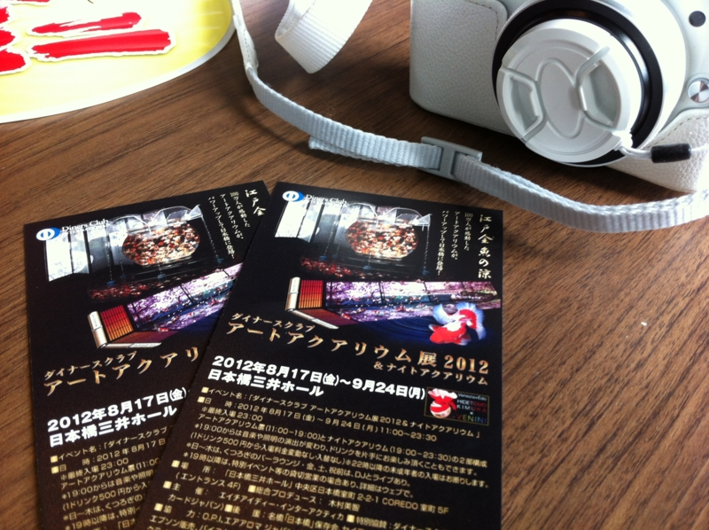
ART AQUARIUM 2012 | Art Aquarium | アートアクアリウム に行ってきた。
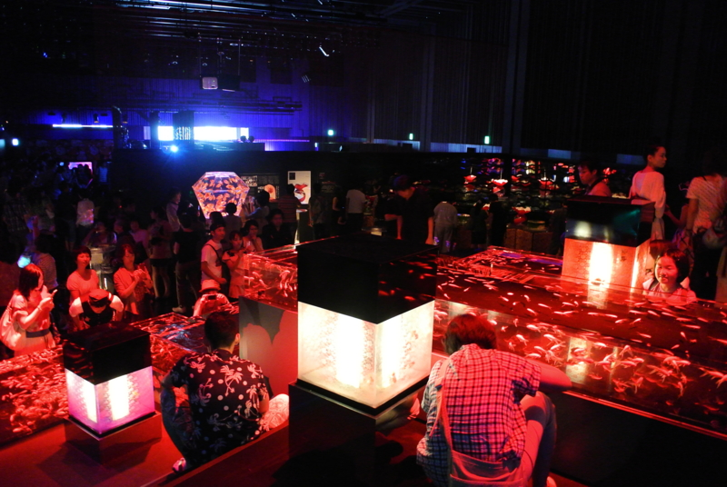
金魚、金魚、金魚。金魚そのものもキレイなのだけれど、光を巧くつかって変化を演出しているので観ていて飽きない。とはいえ、結構人が多かったので途中で具合が悪くなってしまったのだけど。
館内はフラッシュが禁止されているものの写真撮影自体は OK で（動画は禁止）、みんなこの幻想的な光景をカメラやケータイに収めようと躍起になっていた。
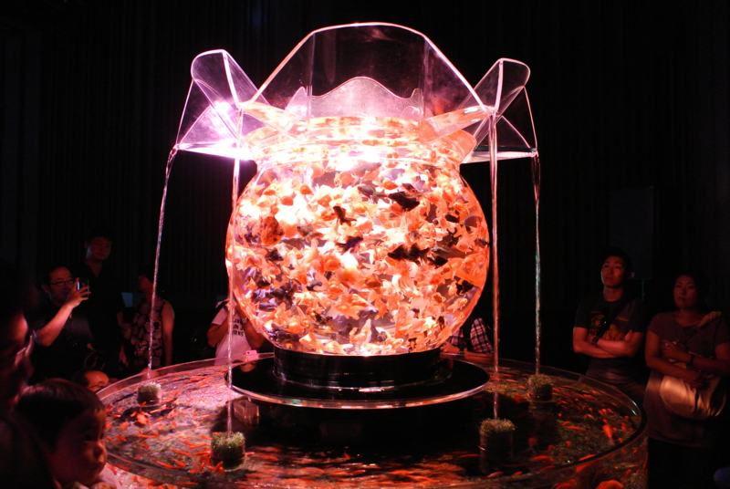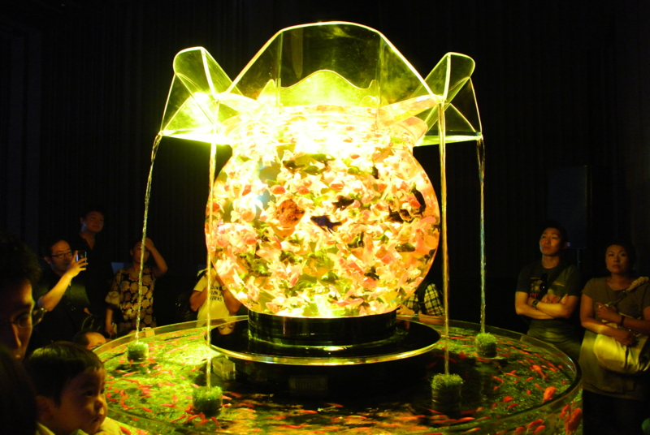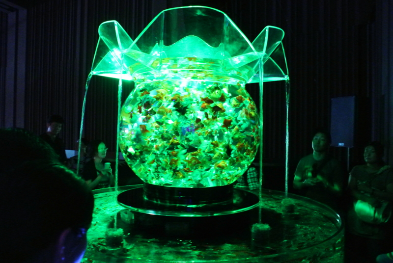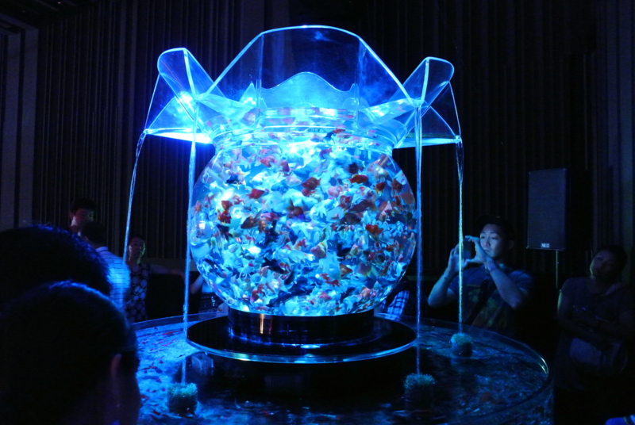
かくいう僕もその一人だけれど、正直、なかなかうまくとるのは難しいんじゃないかなと思った。
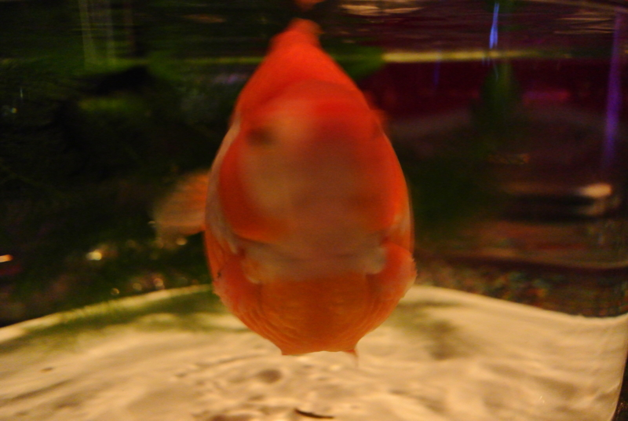
基本的に暗いのでブレるし、光源と色が常に変化するから設定合わせづらいし、そもそもアクリル越しだとなんか汚く写る。まぁ、 Nikon 1 V1 で撮ったので何も考えてないけれど*1。
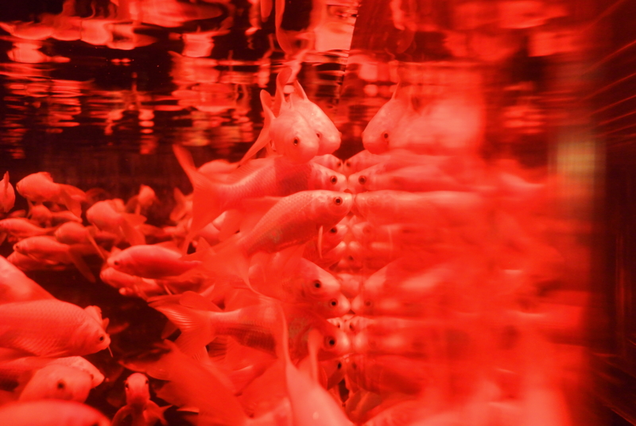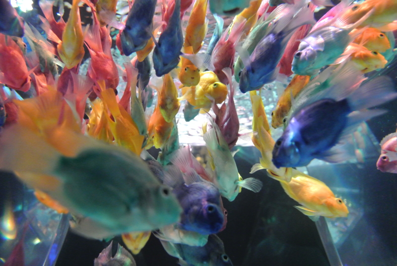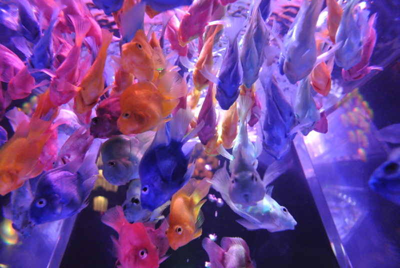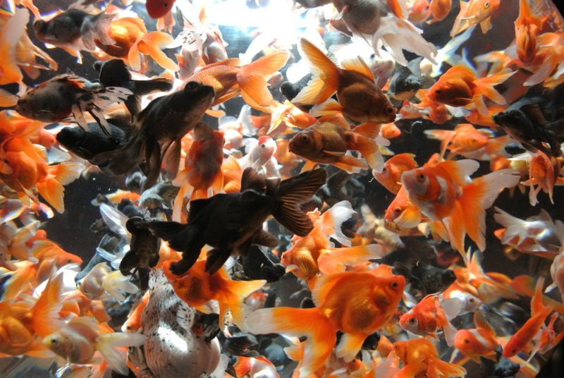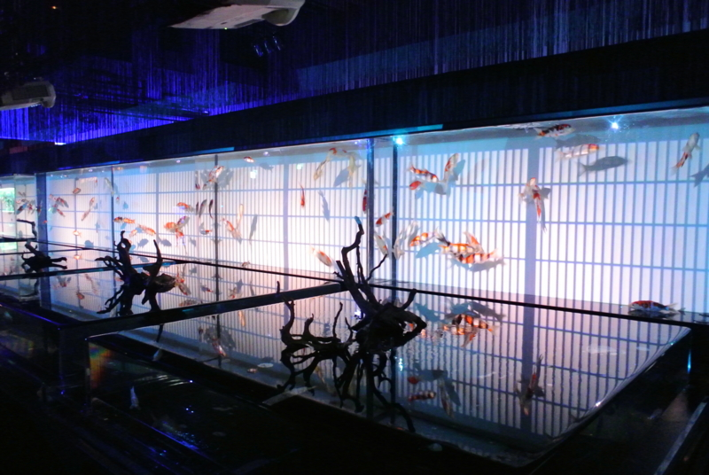
実際に目で見るともっと色鮮やかで、キレイだよ。
*1:ホワイトバランスをちょっとだけかえた